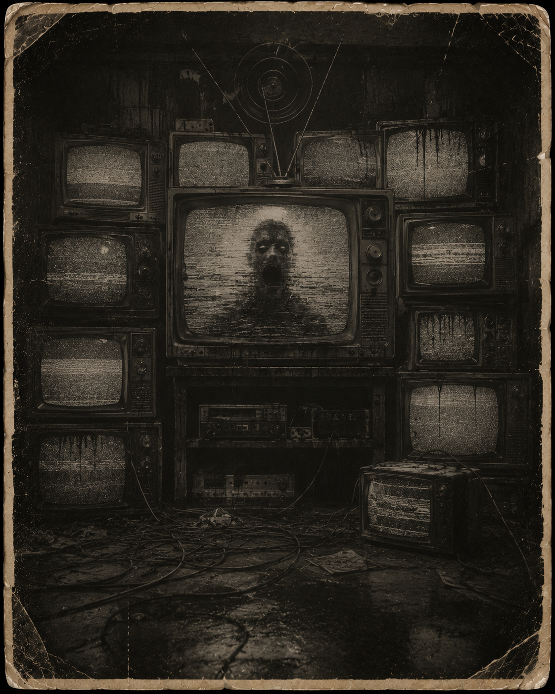

📺 Entity Image

Threat Level
High
Classification
Signal-Based Anomaly
Containment Status
Active Monitoring
Description
The Broadcast is a hostile transmission-based anomaly that manifests through corrupted signals, distorted audio, broken visuals, and unexplained interference.
It does not always appear physically. In many recorded encounters, its presence is first detected through flickering screens, looping messages, sudden static, or voices hidden beneath background noise.
Known Behaviour
The Broadcast distorts incoming attacks, reducing the impact of hostile actions against it.
It also feeds from certain forms of interaction, especially when viewers accidentally strengthen the entity through corrupted transmissions or healing phrases.
During containment events, researchers are advised to treat all messages, signals, and repeated phrases as potentially compromised.
Containment Notes
Do not respond to unknown transmissions.
Do not repeat phrases heard through static.
If the signal begins addressing you directly, disconnect immediately and report to containment staff.
Archive Connection
All recorded appearances, defeats, and containment events involving The Broadcast are logged automatically through the Phantom Realm archive system.
Return to Entity Archive